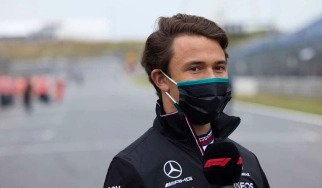
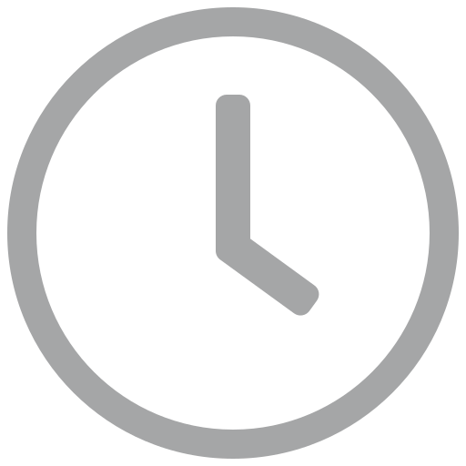
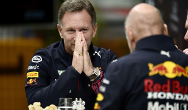
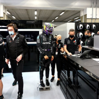

Saudi Arabia
Volgende race | 03 - 05 december
Aftellen tot race
03:02:22:49

| Timetable | ||
|---|---|---|
| 03-12 | Training 1/3 | 14:30 |
| 04-12 | Kwalificatie | 18:00 |
| 05-12 | Race | 18:30 |
F1 Nieuws
de vries naar indycar?
De Vries gaat in december testen in de IndyCar: "Hij is echt een groot talent, een rockster"
 Titelstrijd
Horner over mogelijk titelwinst: “Zou de grootste prestatie ooit van ons zijn”
Trending
Honda
Honda verwacht geen motorwissels voor Verstappen meer dit seizoen.
Gelijkspelletje
Wat gebeurt er als Verstappen en Hamilton volgende week met een gelijke stand eindigen?
Socialposts
Laatste Nieuws
Waarom worden F1-coureurs na iedere race gewogen?
weegschaal
Masi verklaart deal met Red Bull Racing tijdens rode vlag in Djedda
fia
Masi verklaart deal met Red Bull Racing tijdens rode vlag in Djedda
fia
Masi verklaart deal met Red Bull Racing tijdens rode vlag in Djedda
fia
Masi verklaart deal met Red Bull Racing tijdens rode vlag in Djedda
fia
Masi verklaart deal met Red Bull Racing tijdens rode vlag in Djedda
fia
Masi verklaart deal met Red Bull Racing tijdens rode vlag in Djedda
fia